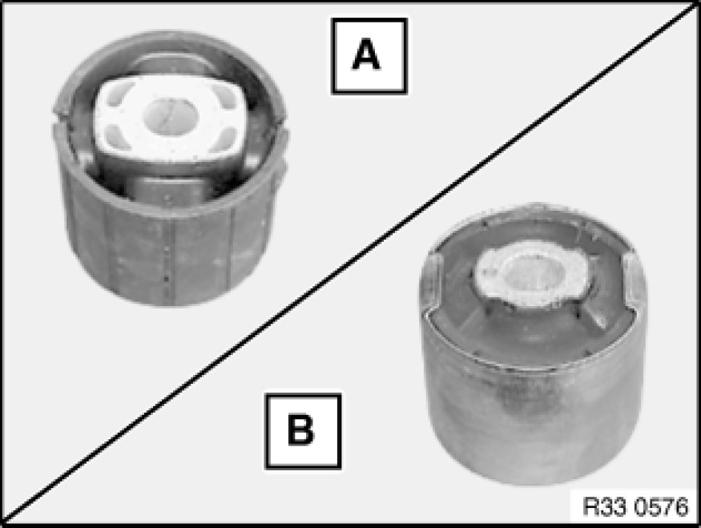

Replacing Rubber Mount for Rear Differential Mounting at Rear
33 17 005 - Replacing rubber mount for rear differential mounting at rear

Necessary preliminary tasks:
- Remove rear differential Removing and Installing/Replacing Rear Differential

Important!
Risk of damage!
When replacing rubber mount (B) with rubber mount (A), fit a spacer between rear differential and rubber mount.
Rubber mount (A) must not be replaced by rubber mount (B).
A = - Remove rubber mount
B = - Remove rubber mount (with hydraulic damping)